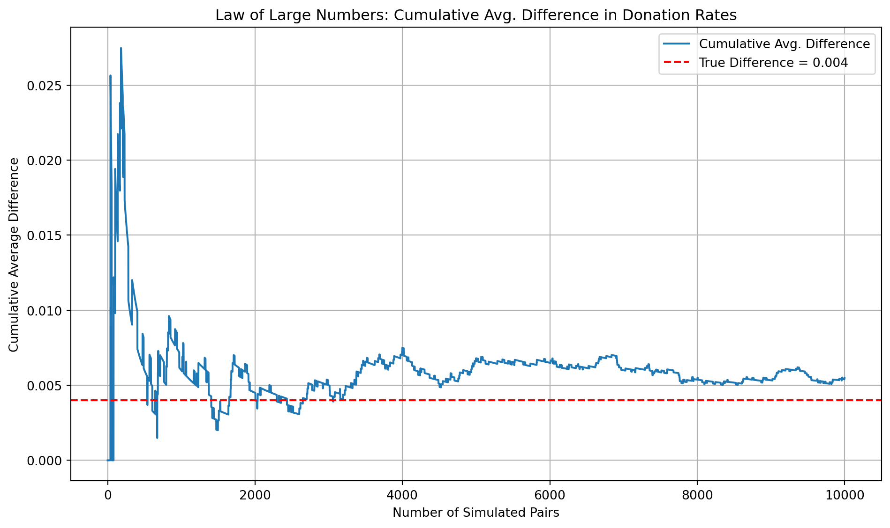
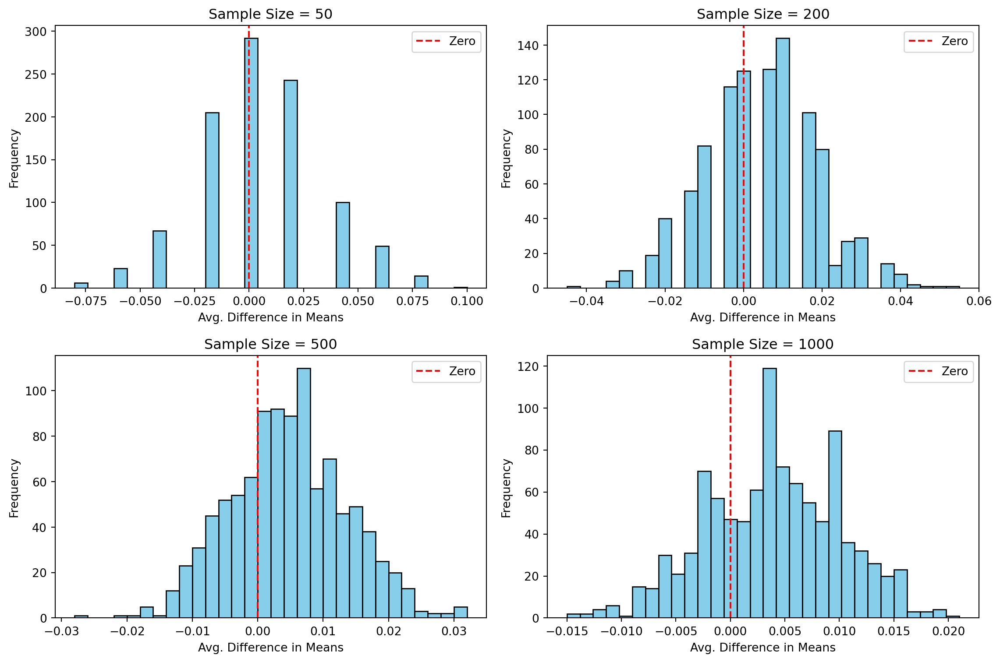

import pandas as pd
df = pd.read_stata("/home/jovyan/Desktop/quarto_website1/projects/project1/HW1/karlan_list_2007.dta")
df['ratio1'] = (df['ratio'] == 1).astype(int)A Replication of Karlan and List (2007)
Introduction
Dean Karlan at Yale and John List at the University of Chicago conducted a field experiment to test the effectiveness of different fundraising letters. They sent out 50,000 fundraising letters to potential donors, randomly assigning each letter to one of three treatments: a standard letter, a matching grant letter, or a challenge grant letter. They published the results of this experiment in the American Economic Review in 2007. The article and supporting data are available from the AEA website and from Innovations for Poverty Action as part of Harvard’s Dataverse. In a large-scale natural field experiment, Dean Karlan and John List partnered with a liberal nonprofit organization (that focuses on Civil Rights) in the United States to investigate how matching gift offers affect charitable giving. The donations will be tax-deuctible for federal income taxes. The study involved 50,083 individuals who had donated to the organization at least once since 1991. These prior donors were randomly divided into a control group and a treatment group. The control group received a standard direct mail fundraising letter, while the treatment group received an otherwise identical letter that included a matching grant offer from a “concerned fellow member.” Within the treatment group, participants were further randomly assigned to different variations across three key dimensions: (1) the match ratio—$1:$1, $2:$1, or $3:$1; (2) the maximum amount available from the matching donor—$25,000, $50,000, $100,000, or unspecified; and (3) the suggested donation amount, which was either equal to, 1.25 times, or 1.5 times the recipient’s previous highest contribution. These design elements allowed the researchers to isolate and test the effects of both the presence and structure of matching incentives on giving behavior. All letters were mailed in August 2005, and the fundraising appeal was tied to a current political issue at the time—Supreme Court nominations—to enhance relevance and urgency.
This project seeks to replicate their results.
Data
Description
The dataset includes donation outcomes (whether and how much was donated), treatment assignments (match ratio, maximum match amount, suggested donation), and individual donor history (e.g., prior donation amount and frequency). It also incorporates ZIP code-level demographics (income, education, race, household size), political context (red/blue state, voted for bush, and county), and nonprofit activity levels by state. This structure enables analysis of treatment effects and heterogeneity across political and demographic groups.
Balance Test
As an ad hoc test of the randomization mechanism, I provide a series of tests that compare aspects of the treatment and control groups to assess whether they are statistically significantly different from one another.
import numpy as np
import statsmodels.formula.api as smf
def welch_t_test(x, y):
x = x.dropna()
y = y.dropna()
n_x, n_y = len(x), len(y)
mean_x, mean_y = np.mean(x), np.mean(y)
var_x, var_y = np.var(x, ddof=1), np.var(y, ddof=1)
denominator = np.sqrt((var_x / n_x) + (var_y / n_y))
if denominator == 0:
return np.nan
return (mean_x - mean_y) / denominator
covariates = [
'mrm2', 'hpa', 'years', 'female', 'couple',
'pwhite', 'pblack', 'ave_hh_sz', 'median_hhincome'
]
for var in covariates:
print(f"\n--- Manual Welch t-test for {var} ---")
x = df[df['treatment'] == 1][var]
y = df[df['treatment'] == 0][var]
t_stat = welch_t_test(x, y)
print(f"t = {t_stat:.4f}")
# Linear regression comparison
model = smf.ols(f"{var} ~ treatment", data=df).fit()
coef = model.params['treatment']
p = model.pvalues['treatment']
print(f"Regression: coef = {coef:.3f}, p = {p:.4f}")
--- Manual Welch t-test for mrm2 ---
t = 0.1195
Regression: coef = 0.014, p = 0.9049
--- Manual Welch t-test for hpa ---
t = 0.9704
Regression: coef = 0.637, p = 0.3451
--- Manual Welch t-test for years ---
t = -1.0909
Regression: coef = -0.058, p = 0.2700
--- Manual Welch t-test for female ---
t = -1.7535
Regression: coef = -0.008, p = 0.0787
--- Manual Welch t-test for couple ---
t = -0.5823
Regression: coef = -0.002, p = 0.5594
--- Manual Welch t-test for pwhite ---
t = -0.5590
Regression: coef = -0.001, p = 0.5753
--- Manual Welch t-test for pblack ---
t = 0.0975
Regression: coef = 0.000, p = 0.9219
--- Manual Welch t-test for ave_hh_sz ---
t = 0.8234
Regression: coef = 0.003, p = 0.4098
--- Manual Welch t-test for median_hhincome ---
t = -0.7433
Regression: coef = -157.925, p = 0.4583Balance Test Results Summary
The Welch t-tests and linear regressions across the selected covariates indicate that there are no statistically significant differences between the treatment and control groups. This suggests that the randomization process successfully created. These balance test results support the internal validity of the experimental design by confirming that any observed differences in outcomes can likely be attributed to the treatment rather than to pre-existing group differences.
Experimental Results
Charitable Contribution Made
First, I analyze whether matched donations lead to an increased response rate of making a donation.
import matplotlib.pyplot as plt
group_totals = df.groupby('treatment')['amount'].sum()
group_totals.index = ['Control', 'Treatment']
plt.figure(figsize=(6, 5))
group_totals.plot(kind='bar', color=['skyblue', 'salmon'])
plt.title('Total Donations Raised by Group')
plt.ylabel('Total Dollars Raised')
plt.xlabel('Group')
plt.xticks(rotation=0)
plt.grid(axis='y', linestyle='--', alpha=0.7)
plt.tight_layout()
plt.show()
from scipy.stats import ttest_ind
control_gave = df[df['treatment'] == 0]['gave'].dropna()
treatment_gave = df[df['treatment'] == 1]['gave'].dropna()
t_stat, p_val = ttest_ind(treatment_gave, control_gave, equal_var=False)
print(f"T-test: t = {t_stat:.3f}, p = {p_val:.4f}")T-test: t = 3.209, p = 0.0013The t-test shows a statistically significant difference in donation rates between the treatment and control groups (t = 3.209, p = 0.0013), supporting the hypothesis that offering a matching donation increases the likelihood of giving. This suggests that people are more inclined to donate when they perceive their contribution to have greater impact, highlighting how behavioral cues like matching grants can effectively nudge charitable behavior.
import statsmodels.formula.api as smf
model = smf.ols('gave ~ treatment', data=df).fit()
print(model.summary()) OLS Regression Results
==============================================================================
Dep. Variable: gave R-squared: 0.000
Model: OLS Adj. R-squared: 0.000
Method: Least Squares F-statistic: 9.618
Date: Fri, 09 May 2025 Prob (F-statistic): 0.00193
Time: 17:46:03 Log-Likelihood: 26630.
No. Observations: 50083 AIC: -5.326e+04
Df Residuals: 50081 BIC: -5.324e+04
Df Model: 1
Covariance Type: nonrobust
==============================================================================
coef std err t P>|t| [0.025 0.975]
------------------------------------------------------------------------------
Intercept 0.0179 0.001 16.225 0.000 0.016 0.020
treatment 0.0042 0.001 3.101 0.002 0.002 0.007
==============================================================================
Omnibus: 59814.280 Durbin-Watson: 2.005
Prob(Omnibus): 0.000 Jarque-Bera (JB): 4317152.727
Skew: 6.740 Prob(JB): 0.00
Kurtosis: 46.440 Cond. No. 3.23
==============================================================================
Notes:
[1] Standard Errors assume that the covariance matrix of the errors is correctly specified.my results do compare to table 3
Differences between Match Rates
Next, I assess the effectiveness of different sizes of matched donations on the response rate.
from scipy.stats import ttest_ind
r1 = df[df['ratio'] == 1]['gave']
r2 = df[df['ratio2'] == 1]['gave']
r3 = df[df['ratio3'] == 1]['gave']
print("T-test: 2:1 vs 1:1")
print(ttest_ind(r2, r1, equal_var=False))
print("\nT-test: 3:1 vs 1:1")
print(ttest_ind(r3, r1, equal_var=False))
print("\nT-test: 3:1 vs 2:1")
print(ttest_ind(r3, r2, equal_var=False))T-test: 2:1 vs 1:1
TtestResult(statistic=0.965048975142932, pvalue=0.33453078237183076, df=22225.07770983836)
T-test: 3:1 vs 1:1
TtestResult(statistic=1.0150174470156275, pvalue=0.31010856527625774, df=22215.0529778684)
T-test: 3:1 vs 2:1
TtestResult(statistic=0.05011581369764474, pvalue=0.9600305476940865, df=22260.84918918778)Yes these results support what the authors said on page 8
Interpretation
my results show no statistically significant difference in donation rates between any of the match ratios tested. In other words, increasing the match ratio from 1:1 to 2:1 or 3:1 did not make people more likely to donate.
import statsmodels.formula.api as smf
model = smf.ols('gave ~ ratio1 + ratio2 + ratio3', data=df).fit()
print(model.summary()) OLS Regression Results
==============================================================================
Dep. Variable: gave R-squared: 0.000
Model: OLS Adj. R-squared: 0.000
Method: Least Squares F-statistic: 3.665
Date: Fri, 09 May 2025 Prob (F-statistic): 0.0118
Time: 17:46:03 Log-Likelihood: 26630.
No. Observations: 50083 AIC: -5.325e+04
Df Residuals: 50079 BIC: -5.322e+04
Df Model: 3
Covariance Type: nonrobust
==============================================================================
coef std err t P>|t| [0.025 0.975]
------------------------------------------------------------------------------
Intercept 0.0179 0.001 16.225 0.000 0.016 0.020
ratio1 0.0029 0.002 1.661 0.097 -0.001 0.006
ratio2 0.0048 0.002 2.744 0.006 0.001 0.008
ratio3 0.0049 0.002 2.802 0.005 0.001 0.008
==============================================================================
Omnibus: 59812.754 Durbin-Watson: 2.005
Prob(Omnibus): 0.000 Jarque-Bera (JB): 4316693.217
Skew: 6.740 Prob(JB): 0.00
Kurtosis: 46.438 Cond. No. 4.26
==============================================================================
Notes:
[1] Standard Errors assume that the covariance matrix of the errors is correctly specified.The regression shows that 2:1 and 3:1 match ratios significantly increase donation rates compared to the base group. However, their effects are nearly identical, suggesting no added benefit from raising the match beyond 2:1. This supports the paper’s conclusion that while matching boosts giving, higher ratios don’t lead to more donations.
coef_r2 = model.params.get('ratio2', 0)
coef_r3 = model.params.get('ratio3', 0)
print(f"\nDifference 2:1 vs 1:1: {coef_r2:.4f}")
print(f"Difference 3:1 vs 1:1: {coef_r3:.4f}")
print(f"Difference 3:1 vs 2:1: {coef_r3 - coef_r2:.4f}")
Difference 2:1 vs 1:1: 0.0048
Difference 3:1 vs 1:1: 0.0049
Difference 3:1 vs 2:1: 0.0001The regression shows that both 2:1 and 3:1 match ratios increase donation rates by about 0.5 percentage points compared to 1:1. But there’s almost no difference between 2:1 and 3:1, so bigger match ratios don’t seem to help more. It looks like just having a match matters more than how big it is.
Size of Charitable Contribution
In this subsection, I analyze the effect of the size of matched donation on the size of the charitable contribution.
from scipy.stats import ttest_ind
import statsmodels.formula.api as smf
control_amt = df[df['treatment'] == 0]['amount']
treatment_amt = df[df['treatment'] == 1]['amount']
t_stat, p_val = ttest_ind(treatment_amt, control_amt, equal_var=False)
print(f"T-test (all data): t = {t_stat:.3f}, p = {p_val:.4f}")T-test (all data): t = 1.918, p = 0.0551The t-test shows a small difference in donation amounts between the treatment and control groups, with the treatment group giving slightly more on average. However, the result is not statistically significant (p = 0.0551), meaning we cannot confidently conclude that the treatment had an effect on how much people donated.
df_donors = df[df['amount'] > 0]
c_amt = df_donors[df_donors['treatment'] == 0]['amount']
t_amt = df_donors[df_donors['treatment'] == 1]['amount']
t_stat, p_val = ttest_ind(t_amt, c_amt, equal_var=False)
print(f"T-test (donors only): t = {t_stat:.3f}, p = {p_val:.4f}")
model_donors = smf.ols('amount ~ treatment', data=df_donors).fit()
print(model_donors.summary())T-test (donors only): t = -0.585, p = 0.5590
OLS Regression Results
==============================================================================
Dep. Variable: amount R-squared: 0.000
Model: OLS Adj. R-squared: -0.001
Method: Least Squares F-statistic: 0.3374
Date: Fri, 09 May 2025 Prob (F-statistic): 0.561
Time: 17:46:03 Log-Likelihood: -5326.8
No. Observations: 1034 AIC: 1.066e+04
Df Residuals: 1032 BIC: 1.067e+04
Df Model: 1
Covariance Type: nonrobust
==============================================================================
coef std err t P>|t| [0.025 0.975]
------------------------------------------------------------------------------
Intercept 45.5403 2.423 18.792 0.000 40.785 50.296
treatment -1.6684 2.872 -0.581 0.561 -7.305 3.968
==============================================================================
Omnibus: 587.258 Durbin-Watson: 2.031
Prob(Omnibus): 0.000 Jarque-Bera (JB): 5623.279
Skew: 2.464 Prob(JB): 0.00
Kurtosis: 13.307 Cond. No. 3.49
==============================================================================
Notes:
[1] Standard Errors assume that the covariance matrix of the errors is correctly specified.The regression shows that among those who donated, individuals in the treatment group gave about $1.67 less than those in the control group, but this difference is not statistically significant (p = 0.561). This suggests that while matching offers increase the likelihood of donating, they do not affect the donation amount once a person chooses to give. Therefore, we cannot draw a causal conclusion about the treatment’s impact on contribution size.
import matplotlib.pyplot as plt
control = df_donors[df_donors['treatment'] == 0]['amount']
treatment = df_donors[df_donors['treatment'] == 1]['amount']
fig, axes = plt.subplots(1, 2, figsize=(12, 5), sharey=True)
axes[0].hist(control, bins=30, color='skyblue', edgecolor='black')
axes[0].axvline(control.mean(), color='red', linestyle='dashed', label=f'Mean: ${control.mean():.2f}')
axes[0].set_title('Control Group - Donation Amounts')
axes[0].set_xlabel('Donation Amount ($)')
axes[0].set_ylabel('Frequency')
axes[0].legend()
axes[1].hist(treatment, bins=30, color='salmon', edgecolor='black')
axes[1].axvline(treatment.mean(), color='red', linestyle='dashed', label=f'Mean: ${treatment.mean():.2f}')
axes[1].set_title('Treatment Group - Donation Amounts')
axes[1].set_xlabel('Donation Amount ($)')
axes[1].legend()
plt.tight_layout()
plt.show()Simulation Experiment
As a reminder of how the t-statistic “works,” in this section I use simulation to demonstrate the Law of Large Numbers and the Central Limit Theorem.
Suppose the true distribution of respondents who do not get a charitable donation match is Bernoulli with probability p=0.018 that a donation is made.
Further suppose that the true distribution of respondents who do get a charitable donation match of any size is Bernoulli with probability p=0.022 that a donation is made.
Law of Large Numbers
import numpy as np
import matplotlib.pyplot as plt
n = 10000
p_control = 0.018
p_treatment = 0.022
true_diff = p_treatment - p_control
control_draws = np.random.binomial(n=1, p=p_control, size=n)
treatment_draws = np.random.binomial(n=1, p=p_treatment, size=n)
differences = treatment_draws - control_draws
cumulative_avg_diff = np.cumsum(differences) / np.arange(1, n + 1)
plt.figure(figsize=(10, 6))
plt.plot(cumulative_avg_diff, label='Cumulative Avg. Difference')
plt.axhline(true_diff, color='red', linestyle='dashed', label='True Difference = 0.004')
plt.title("Law of Large Numbers: Cumulative Avg. Difference in Donation Rates")
plt.xlabel("Number of Simulated Pairs")
plt.ylabel("Cumulative Average Difference")
plt.legend()
plt.grid(True)
plt.tight_layout()
plt.show()
This simulation shows how the average difference in donation rates between treatment and control groups stabilizes as the sample size increases. Although early values fluctuate due to randomness, the cumulative average converges to the true difference (0.004) as more data is added. This demonstrates the Law of Large Numbers: with enough observations, sample averages reliably approach their expected values.
Central Limit Theorem
import numpy as np
import matplotlib.pyplot as plt
control_p = 0.018
treat_p = 0.022
sample_sizes = [50, 200, 500, 1000]
n_simulations = 1000
fig, axes = plt.subplots(2, 2, figsize=(12, 8))
axes = axes.flatten()
for i, n in enumerate(sample_sizes):
diffs = []
for _ in range(n_simulations):
control = np.random.binomial(1, control_p, n)
treat = np.random.binomial(1, treat_p, n)
diffs.append(np.mean(treat) - np.mean(control))
axes[i].hist(diffs, bins=30, color='skyblue', edgecolor='black')
axes[i].axvline(0, color='red', linestyle='dashed', label='Zero')
axes[i].set_title(f'Sample Size = {n}')
axes[i].set_xlabel('Avg. Difference in Means')
axes[i].set_ylabel('Frequency')
axes[i].legend()
plt.tight_layout()
plt.show()
As sample size increases, the distribution of average differences becomes more concentrated and symmetric, illustrating the Central Limit Theorem. With small samples (e.g., 50), the spread is wide and variable. But by n = 1000, the distribution is nearly normal and centered around the true mean difference. Importantly, zero is in the tail, not the center, suggesting that the effect of the treatment is consistently positive across simulations.